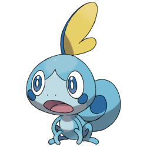

|  |
SobbleSobble is a Water type Pokémon introduced in Generation 8. It is known as the Water Lizard Pokémon. It is one of the starter Pokémon available in Pokémon Sword & Shield (releasing late 2019) along with Grookey and Scorbunny. |
| National N. | 816 |
| Type | Water |
| Species | Water Lizard Pokemon |